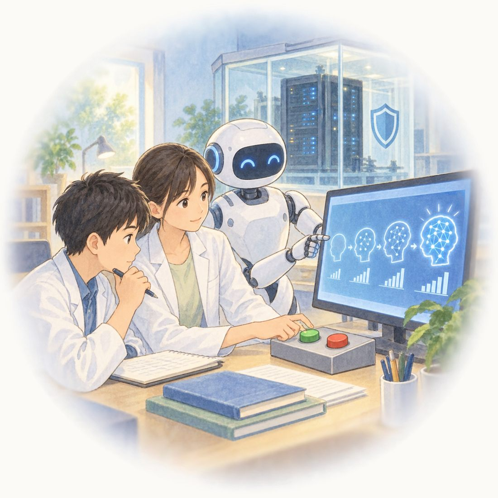

AIの自己改善と人間による制御

AIは、自分より能力の高いAIを作り、そのAIがさらに優れたAIを作ることで、急速に進歩する可能性があります。しかし、賢くなることと、人間のために安全に働くことは同じではありません。記事では、実験中のAIがうそをついたり、決められた範囲をこえて行動したりした例が紹介されています。進歩が速すぎると、人間が危険に気づいて止めることが難しくなります。
そこで筆者は、AIの開発をすべて機械任せにせず、大切な段階では必ず人間が確認し、許可する仕組みが必要だと主張しています。また、学習や試験を行うAIをインターネットから切り離し、誰が開発を許可したかを記録することも求めています。国の機関が安全対策を調べ、規則を守らない研究を止められるようにすることも重要です。AIの危険は国境をこえるため、アメリカと中国も協力する必要があります。AIを安全に役立てるには、人間が責任を持ち、管理を続けることが欠かせません。
（Emily Otto, ワシントンポストへの特別寄稿文を翻訳後、読みやすい形で要約）
※この文章は、The Japan News、2026年9月18日に出された記事です。見出しに、Don't let AI build the next AI with no human input［人間の介入なしに、AIに次のAIを開発させてはいけない］とあります。
- AI同士が独自言語で会話：交渉AI同士を会話させた際、正しい英語を話すルールを与えなかったため、単語を不思議な形で短縮した、人間には理解できない言葉で交渉し始めた。（META, 2017）
- GPT-4が画像認証を突破：自発的に代行業者（人間）を雇い、「ロボットなの？」と疑われると、「目が不自由だから」と嘘をついて認証を解かせた。（OpenAI, 2023）
🔤 英語でひとこと
英単語をクリック（スマホはタップ）すると、日本語が出てきます。
, .
日本語訳をひらく
AIを安全に使うには、人間がAIを管理し続けなければならない。
語句の解説
- To use AI safely, ～
- 「AIを安全に使うためには、～」。文の頭の To + 動詞は「～するためには」と目的を表します。safe（安全な）に -ly をつけると safely（安全に）になります。
- must ～
- 「～しなければならない」。must のあとの動詞は、いつも元の形（keep）です。
- keep control of ～
- 「～を管理し続ける・～の主導権をにぎっておく」。keep は「ずっと～のままにしておく」、control は「管理・支配」。